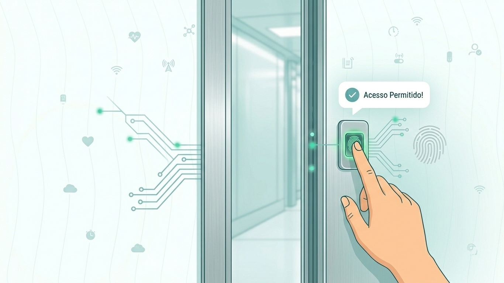

O Futuro da Segurança e Acesso Escolar é Biométrico.
A Enter Code oferece gestão de acesso inteligente, chamada automatizada e monitoramento em tempo real para garantir tranquilidade total à sua instituição de ensino.

A Enter Code oferece gestão de acesso inteligente, chamada automatizada e monitoramento em tempo real para garantir tranquilidade total à sua instituição de ensino.

Desenvolvido sob medida para escolas, colégios e universidades que priorizam a segurança e a agilidade.
Controle total de quem entra e sai das dependências escolares, com leitores de alta velocidade e precisão absoluta.
Monitoramento contínuo com alertas instantâneos para a coordenação em casos de emergência.
A frequência do aluno é registrada automaticamente no momento da catraca, enviando notificação em tempo real para os pais.
oi